സഞ്ചാരി ഏതു ഭൂപട-മാണ് പരിശോധിത്ഥുന്നത്?
85
വായിത്ഥാം വരയ്ത്ഥാം
ഖഠ 529-3/ഋഢട - 4 (ങ) ഢീഹ.2
എഗ്ലിനായിരിത്ഥും?
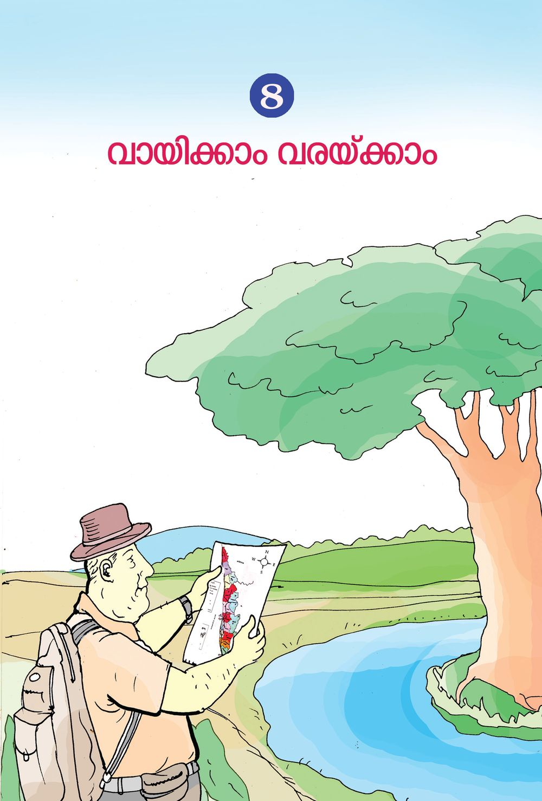
സഞ്ചാരി ഏതു ഭൂപട-മാണ് പരിശോധിത്ഥുന്നത്?
85
വായിത്ഥാം വരയ്ത്ഥാം
ഖഠ 529-3/ഋഢട - 4 (ങ) ഢീഹ.2
എഗ്ലിനായിരിത്ഥും?

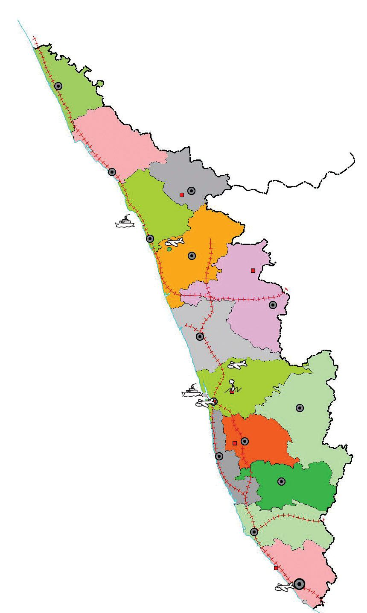
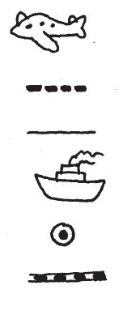
ഭൂപടം വായിത്ഥാം കേരള-സ്ഥിലെ ജി√-കളും പ്രധാന ÿലത്മളും നിത്മƒ മൂന്നാം ക്ലാസിൺ പരിച-യ-∏െന്ത√ോ. താഴെ കൊടുസ്ഥ ഭൂപടം പരിശോധിത്ഥൂ. ക ആസ യ്യ ഏഗാ ഡ ്
കവ്വൂയ്യ വയനാട് കേ ആഴ ഇത്ഥേ ആട ്
മല-∏ുറം പാലത്ഥാട്
തൃബ്ലൂയ്യ
എറണാകുളം
ഇടുത്ഥി
സൂചിക
വിമാന-സ്ഥാവളം
കോന്തയം ആ ല -∏ ഉഴ
പസ്ഥനംതിന്ത
സംÿാന അതിയ്യസ്ഥി ജി√ാ അതിയ്യസ്ഥി കൊ√ം
തല-ÿാനം റെയിൺ∏ാത 86
രം -പു -ഗ്ല -വന രു തി
പരിസ-രപ-ഠനം
തുറമുഖം

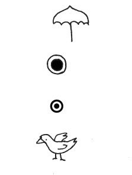
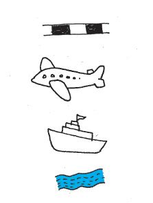
എഗ്ലെ√ാം വിവര-ത്മƒ നിത്മƒ ക≠െസ്ഥി? ക≠െസ്ഥിയ വിവര-ത്മƒ ഉƒ∏െടുസ്ഥി കേരളസ്ഥെത്ഥുറിണ്ണ് ഒരു കുറി∏് തയാറാത്ഥൂ. ഭൂപട-ത്മളിലെ സൂചിക ഭൂപട-സ്ഥിൺ റോഡുകƒ, റെയിൺ∏ാതകƒ, പുഴകƒ, വിമാന-സ്ഥാവ-ളത്മƒ തുടത്മിയവയെ ചി"-ത്മളും നിറത്മളും ഉപയോഗിണ്ണാണ് അടയാള-∏െടുസ്ഥുന്നത്. ഭൂപട-ത്മളിലെ നിറത്മളും ചി"-ത്മളും എഗ്ലിനെ സൂചി∏ിത്ഥുന്നുവെന്ന് കാണിത്ഥുന്നതാണ് സൂചിക. ഭൂപടത്മളിൺ ഉപയോഗിത്ഥുന്ന ചില ചി"-ത്മളാണ് ചുവടെ കൊടുസ്ഥിരിത്ഥുന്നത്. ചി"-ത്മƒ റെയിൺ∏ാത വിമാന-സ്ഥാവളം
തുറമുഖം
കേരള-സ്ഥിലെ പ്രധാന- നദികƒ, വിനോദ-സഞ്ചാര കേμ്രത്മƒ, പക്ഷി സന്നേത-ത്മƒ, വന്യജീവി സന്നേത-ത്മƒ എന്നിവയെത്ഥുറിണ്ണു≈ വിവരത്മƒ ടീണ്ണറോട് ചോദിണ്ണറിയൂ.
നദി വിനോദ-സഞ്ചാര-കേμ്രം തല-ÿാനം ജി√ാ- ആ-ÿാനം പക്ഷിസ-ന്നേതം
നിത്മƒത്ഥറിയാവുന്ന വിവര-ത്മƒ ഈ ചി"-ത്മƒ ഉപയോഗിണ്ണ് കേരള-സ്ഥി‚െ ഭൂപട-സ്ഥിൺ കൂന്തിണ്ണേയ്യത്ഥൂ.
കൂന്തുകായ്യ ക്ലാസ് മുറി വരയ്ത്ഥാ≥ തീരുമാനിണ്ണു. മേശയുടെ നാല് വശസ്ഥുമായി നാല്പേയ്യ ഇരുന്നു. മേശ-∏ുറസ്ഥ് പേ∏യ്യ വണ്ണ് വരയ്ത്ഥാ≥ തുടത്മി. 87
വായിത്ഥാം വരയ്ത്ഥാം
ക്ലാസ് മുറി വരയ്ത്ഥാം

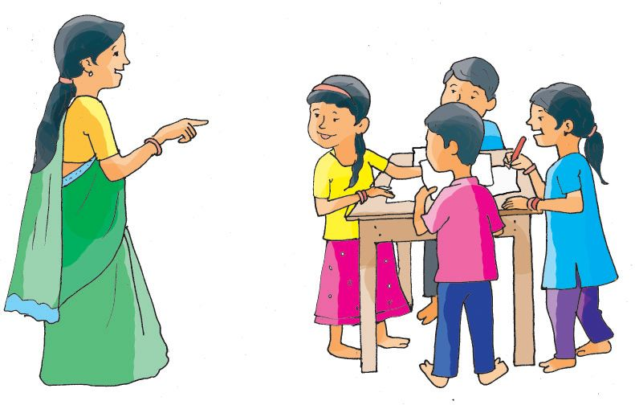
""എ√ാവരും പേ∏-റി‚െ മുകളിൺ, വലതുവ-ശസ്ഥ് പേരെഴുതണേ. വലതുഭാഗം, ഇടതുഭാഗം, മുകƒഭാഗം, താഴ്ഭാഗം എന്നിവയും അടയാള-∏െടുസ്ഥണം''˛അഭി വിളിണ്ണുപറ-™ു. അ∏ോഴാണ് ടീണ്ണയ്യ വന്നത്. ""ക്ലാസി‚െ വാതിൺ, ജനലുകƒ, മേശ, ബെഞ്ചുകƒ, ബോയ്യഡ് എന്നിവയും വരയ്ത്ഥണം''˛ ടീണ്ണയ്യ ഓയ്യമി-∏ിണ്ണു.
കുന്തികƒ വരണ്ണ, ക്ലാസി‚െ രേഖാചിത്രത്മƒ അവയ്യ അഭിമാന-സ്ഥോടെ ഉയയ്യസ്ഥിത്ഥാന്തി. ക്ലാസിലെ മ‰ു കുന്തികƒ അദ്ഭുത-∏െന്തു. ഒരു ക്ലാസി‚െ തന്നെ നാല് വ്യത്യസ്ത ചിത്രത്മളോ! എഗ്ലുകൊ-≠ായിരിത്ഥും നാല് ചിത്രത്മളും വ്യത്യസ്തമായത്? ക്ലാസ്മുറിയുടെ രേഖാചിത്രം എ√ാവയ്യത്ഥും ഒരുപോലെ വരയ്ത്ഥാ≥ കഴിയി-√േ? അതിനായി എഗ്ലെ√ാം കാര്യത്മƒ ശ്ര≤ിത്ഥണം? വടത്ഥ്
പരിസ-രപ-ഠനം
പടി-™ാറ്
കിഴത്ഥ്
തെത്ഥ്
88
ചുമ- ര ഇൺ തൂത്ഥി- യ ഇന്ത ഭൂപ- ട സ്ഥി‚െ മുകƒഭാഗം വടത്ഥ് ദിത്ഥിനെയാണ് സൂചി∏ിത്ഥുന്നത്. ദിത്ഥ് കാണിത്ഥാ≥ ഈ ചി"മാണ് ഉപയോഗിത്ഥുന്നത്. ഇതി‚െ അടി-ÿാന-സ്ഥിൺ മ‰ു ദിത്ഥുകƒ ക≠െസ്ഥാമ-√ോ.

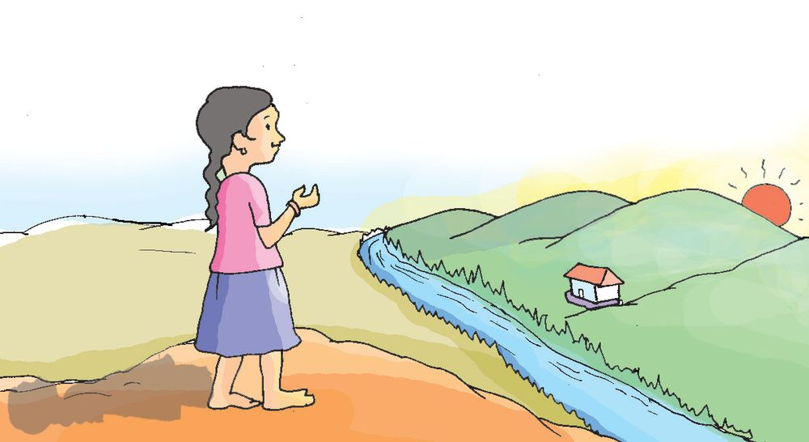
നിത്മളുടെ ക്ലാസ്മുറിയുടെ വടത്ഥുഭാഗം എവിടെയാണ്? പേ∏-റിനു മുകƒ ഭാഗസ്ഥ് വടത്ഥുഭാഗം വരുന്ന രീതിയിലാണ് രേഖാ ചിത്രം വരയ്ത്ഥേ≠ത്. തെത്ഥ്, കിഴത്ഥ്, പടി-™ാറ് എന്നീ ദിത്ഥുകƒ കൂടി ശരിയായി രേഖ-∏െടുസ്ഥൂ. ഓരോന്നിനും ഇനി-∏-റയുന്ന ചി"-ത്മƒ ചേയ്യസ്ഥ് നിത്മളും വരണ്ണുനോത്ഥൂ. ഠ മേശ
ഉ വാതിൺ
ആ.ആ ഞ്ഞാത്ഥ് ബോയ്യഡ്
ണ ജനൺ ആ ബെഞ്ച്
വരണ്ണ ചിത്രത്മƒ ഭിസ്ഥിയിൺ ഒന്തിത്ഥൂ. ഇനി നോത്ഥൂ, എ√ാ ചിത്രത്മളും ഒരേപോലെയ√േ?
ദിത്ഥുകളറിയാം സൂര്യനെ നോത്ഥി നാം എളു-∏-സ്ഥിൺ ദിത്ഥ് അറിയാ≥ ശ്രമിത്ഥാറു-≠-√ോ.
ചിത്രം നിരീക്ഷിത്ഥൂ. ഉദയ-സൂര-്യനെ നോത്ഥി ലീന ദിത്ഥുകƒ ക≠െസ്ഥു ന്നത് എത്മനെയെന്ന് ശ്ര≤ിത്ഥൂ. $ ഏതു ഭാഗസ്ഥേത്ഥു നോത്ഥിയാണ് ലീന നിൺത്ഥുന്നത്? $ ലീനയുടെ വലതുകൈഭാഗം ഏത് ദിത്ഥിനെയാണ് സൂചി-∏ിത്ഥുന്നത്? $ ലീനയുടെ നിഴൺ വീഴുന്ന ഭാഗം ഏത് ദിത്ഥാണ്? സൂര്യനെ കാണാസ്ഥ സമയ-ത്മളിൺ നമുത്ഥെത്മനെ ദിത്ഥുകƒ അറിയാ≥ കഴിയും? 89
വായിത്ഥാം വരയ്ത്ഥാം
ഹായ്, പ്രഭാത-സൂര്യ≥! അ∏ോƒ എ‚െ ഇടതുകൈ ഭാഗമാണ√േ വടത്ഥ്.
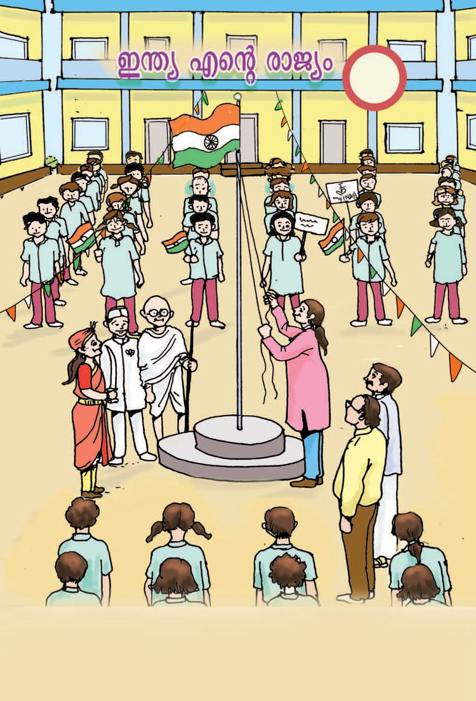
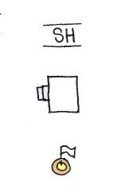
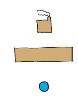
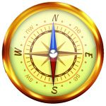
വടത്ഥുനോത്ഥിയ-ഗ്ല്രം ദിത്ഥ് അറിയുന്നതിന് ഉപയോഗിത്ഥുന്ന ഉപക-രണ-മാണ് വടത്ഥുനോത്ഥിയ-ഗ്ല്രം. വടത്ഥുനോത്ഥിയ-ഗ്ല്രസ്ഥി‚െ മധ്യസ്ഥിൺ ഒരു കാഗ്ലസൂചി കാണാം, ഈ സൂചി വടത്ഥുതെത്ഥായി മാത്രമേ നിൺത്ഥുക-യു-≈ൂ. ഈ സൂചിയിലെ പ്രതേ്യക-മായി അടയാള-∏െടുസ്ഥിയ അഗ്രമാണ് വടത്ഥുദിത്ഥിനെ സൂചി-∏ിത്ഥുന്നത്. ക്ലാസ് മുറിയുടെ മധ്യസ്ഥിൺ വടത്ഥുനോത്ഥിയഗ്ല്രം വണ്ണ് ദിത്ഥുകƒ അടയാള-∏െടുസ്ഥാം.
സ്കൂളി‚െ രേഖാചിത്രം വ പ
കി തെ
സൂചിക സംÿാന-പാത പാചക-∏ുര ല്ലേജ് സ്കൂƒ
പരിസ-രപ-ഠനം
കൊടിമരം
കിണയ്യ
നμനയുടെ സ്കൂളി‚െ രേഖാചിത്രമാണിത്. രേഖാചിത്രസ്ഥിൺനിന്നു താഴെ കൊടുസ്ഥ കാര്യത്മƒ ക≠െസ്ഥൂ. $ സ്കൂളി‚െ ഏതു ദിത്ഥിലൂടെയാണ് സംÿാനപാത കടന്നുപോകുന്നത്? $ പാചക-∏ുര-യുടെ ഏതു ദിത്ഥിലാണ് കിണയ്യ? $ കൊടിമ-രസ്ഥി‚െ ഏതു ദിത്ഥിലാണ് ല്ലേജ്? ഇതുപോലെ നിത്മളുടെ സ്കൂളി‚െ രേഖാചിത്രം പരിസ-രപുസ്തകസ്ഥിൺ വരയ്ത്ഥൂ. 90

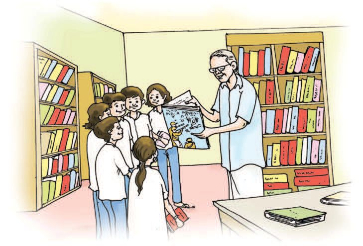
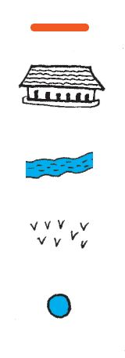
സനലി‚െ പഞ്ചായസ്ഥ് ആനറ പഞ്ചായ-സ്ഥിലാണ് സനലി‚െ സ്കൂƒ.
വ പ
കി
ആനറ ഗ്രാമ-∏-ഞ്ചായസ്ഥ് തെ
ഇടസ്ഥറ -പഞ്ചായസ്ഥ്
പെരിയാപുരം -പഞ്ചായസ്ഥ്
തമിഴ്നാട്
ചരൺ∏ുഴ -പഞ്ചായസ്ഥ്
സൂചിക റോഡ്
സ്കൂƒ
നെൺത്ഥൃഷി
പൊതുകിണയ്യ
91
വായിത്ഥാം വരയ്ത്ഥാം
നദി

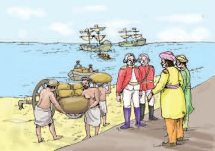
ആനറ പഞ്ചായസ്ഥി‚െ ഭൂപടം പരിശോധിണ്ണ് ഓരോ വായ്യഡി-‚െയും സവിശേഷ-തകƒ പന്തിക-∏െടുസ്ഥൂ. വായ്യഡ് നബ്ബയ്യ 1
സവിശേഷ-തകƒ $ $ $ $
തമിഴ്നാടുമായി അതിയ്യസ്ഥി പന്നിടുന്നു. പൊതുകിണ-റു≠്. സ്കൂƒ ഉ≠്. പുഴ ഉ≠്.
2 3 4
ഇതുപോലെ നിത്മളുടെ പഞ്ചായ-സ്ഥി‚െ സവിശേഷ-തകƒ ഗ്രാമ-∏-ഞ്ചായസ്ഥ് ഭൂപട-സ്ഥിൺനിന്നു ക≠െസ്ഥൂ.
എ‚െ ജി√ കേരള-സ്ഥി‚െ ഭൂപട-സ്ഥിൺ സ്വഗ്ലം ജി√ ക≠െസ്ഥൂ. സ്വഗ്ലം ജി√-യുടെ രേഖാചിത്രസ്ഥിൺ താഴെ കൊടുസ്ഥവ അടയാള-∏െടുസ്ഥൂ. $
അയൺ ജി√-കƒ
$
ജി√ാ ആÿാനം
$
വിനോദസഞ്ചാര-കേ-μ്രത്മƒ
$
നദികƒ
പരിസ-രപ-ഠനം
മ‰െഗ്ലെ√ാം നമുത്ഥ് രേഖ-∏െടുസ്ഥാം?
വിശാല-മായ ഒരു പ്രദേശസ്ഥെ സവിശേഷതകƒ ഒരു കടലാസിൺ കൃത്യമായി ചിത്രീക-രിത്ഥാ≥ നമുത്ഥ് കഴിയും. ഭൂപ്രദേശ-ത്മളുടെ ഇസ്ഥര-സ്ഥിലു≈ ചിത്രീക-രണ-സ്ഥെയാണ് ഭൂപടം എന്ന്- പറ-യുന്നത്. 92

പ്രധാന പഠന-നേന്തത്മƒ $
സൂചിക അടി-ÿാന∏െടുസ്ഥി കേര-ളസ്ഥി‚െ ഭൂപടം വായിത്ഥുന്നു.
$
ഭൂപട-സ്ഥിൺ ദിത്ഥുകƒ -കൃത്യമായി രേഖ-∏െടുസ്ഥുന്നു.
$
സ്വഗ്ലം ക്ലാസ് മുറിയുടെയും വിദ്യാല-യസ്ഥി‚െയും രൂപരേഖ ദിശപാലിണ്ണ് തയാറാത്ഥുന്നു.
$
വടത്ഥുനോത്ഥിയഗ്ല്രം ഉപയോഗിണ്ണ് ദിത്ഥുകƒ ക≠െസ്ഥുന്നു.
$
ഭൂപടത്മളിൺ ചി"-ത്മƒ ഉപയോഗിണ്ണ് പ്രധാന വിഭവ-ത്മƒ അടയാള-∏െടുസ്ഥുന്നു.
$
കേരള-സ്ഥി‚െയും സ്വഗ്ലം ജി√-യുടെയും ഭൂപട-സ്ഥിൺ ചി"-ത്മƒ ഉപയോഗിണ്ണ് വിഭവ-ത്മƒ അടയാള-∏െടുസ്ഥുന്നു.
$
പഞ്ചായസ്ഥ് ഭൂപടം വായിണ്ണ് പഞ്ചായ-സ്ഥിലെ വിഭവ-ത്മƒ പന്തിക∏െടുസ്ഥുന്നു.
$
ജി√ാ ഭൂപട-സ്ഥിൺ വിഭവ-ത്മƒ ചിത്രീകരിത്ഥുന്നു.
വിലയിരുസ്ഥാം 1
ദിത്ഥുകളി
ഒബ്ബത് കളത്മƒത്ഥു നടുവിലു≈ കളസ്ഥിൺ ഒരു കുന്തി നിൺത്ഥണം. "കിഴത്ഥ്' എന്ന് പറയുബ്ബോƒ കിഴത്ഥു≈ കളസ്ഥിലേത്ഥ് കുന്തി ചാടണം. ഉടനെ തന്നെ നടുവിലെ കളസ്ഥിലേത്ഥു- തിരിണ്ണു ചാടണം. പല ദിത്ഥുകƒ പറ™് കളി ആവയ്യസ്ഥിത്ഥും. ഏ‰വും കൂടുതൺ സമയം തെ‰ാതെ കളിണ്ണ കുന്തി ഒന്നാം ÿാനസ്ഥെസ്ഥുന്നു. വടത്ഥ്
പടി-™ാറ്
തെത്ഥു പടി-™ാറ്
വടത്ഥുകിഴത്ഥ്
കിഴത്ഥ്
തെത്ഥ്
തെത്ഥുകിഴത്ഥ് 93
വായിത്ഥാം വരയ്ത്ഥാം
വടത്ഥു പടി-™ാറ്

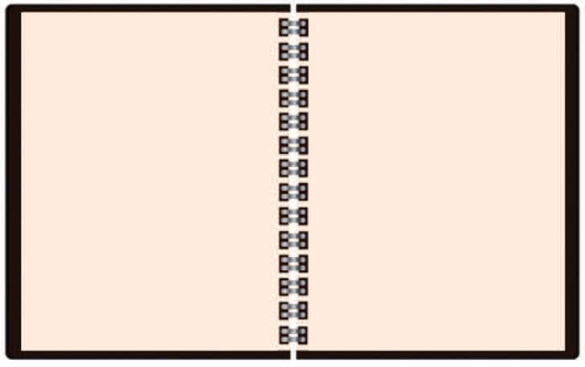
2.
ഏതു ദിത്ഥിൺ?
് ആറ ടി-™ ഉപ ത്ഥ വട
പ ആറ് ഇ-™ ട പ ഉ ത്ഥ തെ
വ
വ ടത്ഥ ഉക ഇഴത്ഥ ്
മൃഗ- ശ ആ- ല യിലെ നിരീ- ക്ഷ ണഗോപു- ര - സ്ഥ ഇ- ല ആണ് ലിയാ- ന - ഇ∏ോƒ നിൺത്ഥുന്നത്. ഗോപുര-സ്ഥി‚െ ഏതു ദിത്ഥിലാണ് ഓരോ ജീവിയുമെന്ന് എഴുതൂ.
കി തെ ത്ഥ തെ ഉകിഴത്ഥ ്
$ ഗോപുര-സ്ഥി‚െ വടത്ഥ് ദിത്ഥിലു≈ ജീവി-- ഏത്? $ ഒന്തകം ഗോപുര-സ്ഥി‚െ ഏതു ദിത്ഥിലാണ്? $ ഗോപുര-സ്ഥി‚െ ഏതു ദിത്ഥിലാണ് കുതിര? പരിസ-രപ-ഠനം
$ ഗോപുര-സ്ഥി‚െ ഏതു ദിത്ഥിലാണ് മുതല? $ പാബ്ബി‚െ ÿാനം എവിടെയാണ്? 94

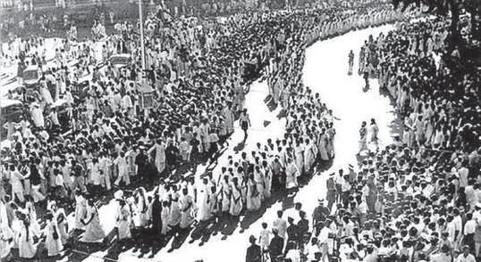
3.
സൂചിക നിയ്യമിത്ഥാം
താഴെ കൊടുസ്ഥിരിത്ഥുന്ന രേഖാചിത്രസ്ഥിൺ നിന്ന് എഗ്ലെ√ാം കാര്യത്മƒ ക≠െസ്ഥാ≥ കഴിയും?
റെയിൺവേ ല്ലേഷ≥ ബസ് ല്ലേഷ≥
പോലീസ് ല്ലേഷ≥ റോഡ് ് -ഫീസ ആ ഒ ് പോല്ല
സ്കൂƒ നെൺവയൺ
പുഴ പാലം
ക≠െസ്ഥിയ ഓരോന്നിനും സൂചിക നിയ്യമിണ്ണ് രേഖ-∏െടുസ്ഥുക. പോലീസ് ല്ലേഷ≥ റെയിൺവേ ല്ലേഷ≥ ബസ് ല്ലേഷ≥ പോല്ല് ഓഫീസ് പുഴ പാലം
95
വായിത്ഥാം വരയ്ത്ഥാം
സൂചിക
$ $ $ $ $ $ $

4.
ശരിയായ-തിനു നേരെ ചി"ം ചേയ്യത്ഥുക. $ ദിത്ഥ് അറിയാനു≈ ഉപക-രണ-സ്ഥി‚െ പേര്? (തെയ്യമോ- മ ഈ- ‰ യ്യ, സ് പ ഈഡോമീ‰യ്യ, വടത്ഥുനോത്ഥി- യ ഗ്ല്രം, ദൂരദയ്യശിനി) $ ഒരു ഭൂപട-സ്ഥി‚െ മുകƒഭാഗം ഏതു ദിത്ഥിനെയാണ് സൂചി-∏ിത്ഥുന്നത്? (കിഴത്ഥ്, പടി-™ാറ്, തെത്ഥ്, വടത്ഥ്)
5.
താഴെ കൊടുസ്ഥ ചി"ത്മƒ ഓരോ- ന്ന ഉം എഗ്ലി- എന- യ ആണ് സൂചി∏ിത്ഥുന്നത്?
ഞട
ടഒ
പരിസ-രപ-ഠനം
തുടയ്യപ്രവയ്യസ്ഥനത്മƒ $
നിത്മളുടെ വീടി‚െ രൂപരേഖ വരയ്ത്ഥൂ. അതിനടുസ്ഥു≈ -കെന്തിടത്മƒ, വഴി, റോഡ്, അയൺവീടുകƒ എന്നിവ സൂചി-∏ിത്ഥൂ.
$
കായ്യഡ്ബോയ്യഡ്, പത്രത്ഥട-ലാസ് എന്നിവ ഉപയോഗിണ്ണ് സ്വഗ്ലം സ്കൂƒ രേഖാചിത്രസ്ഥി‚െ മാതൃക നിയ്യമിത്ഥുക.
96